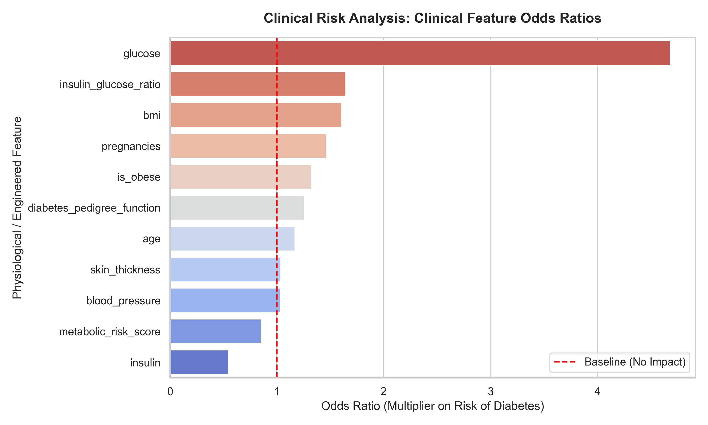
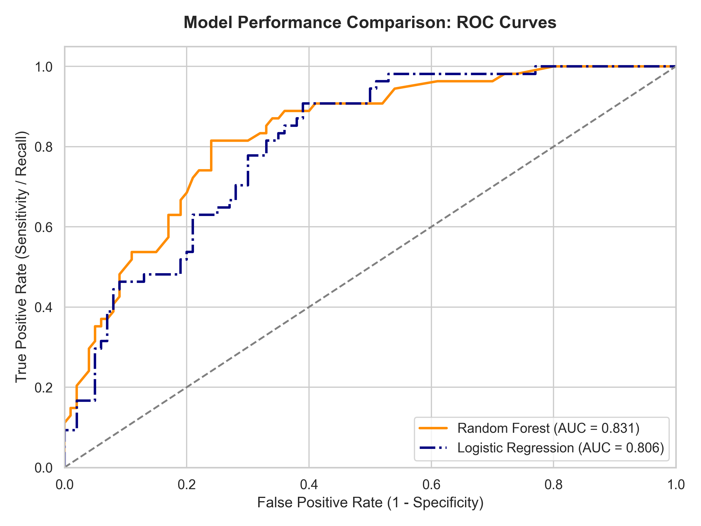
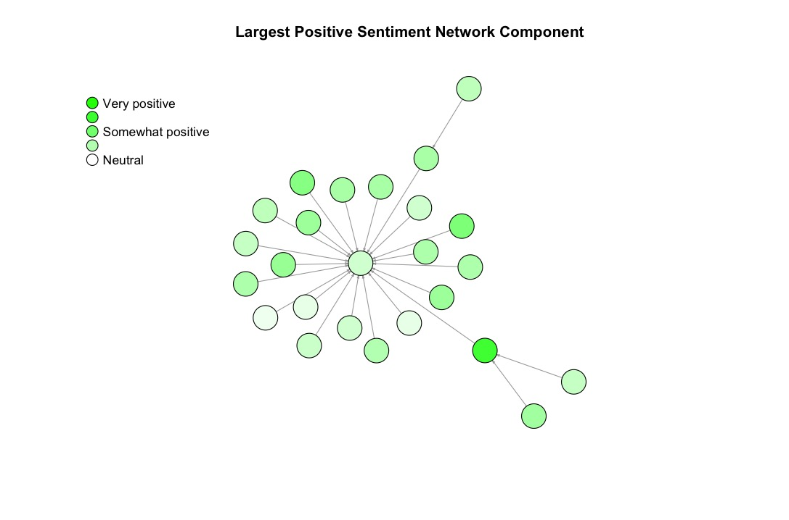
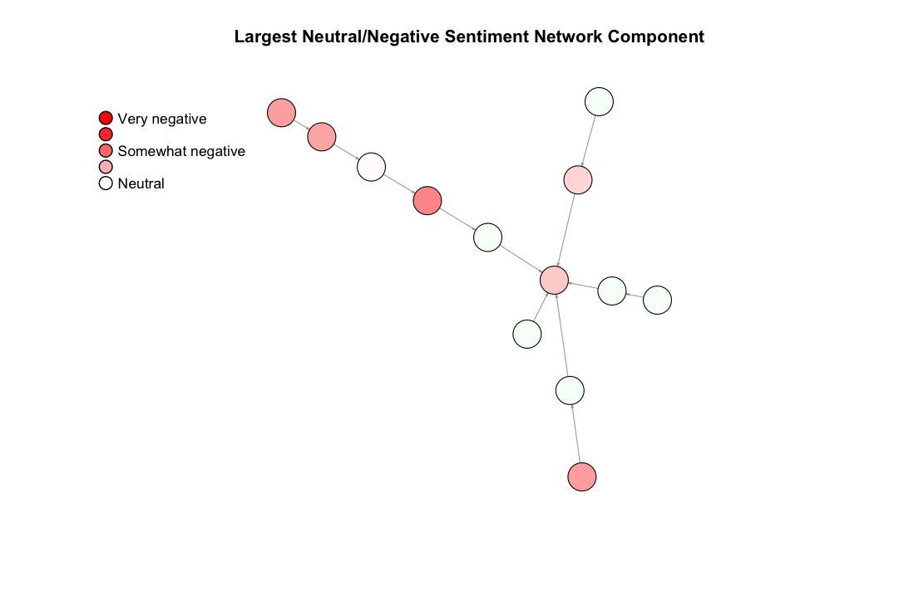
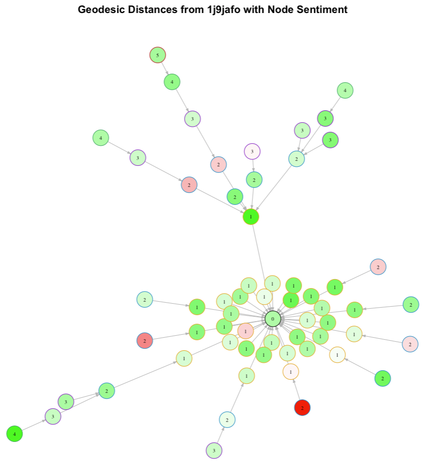
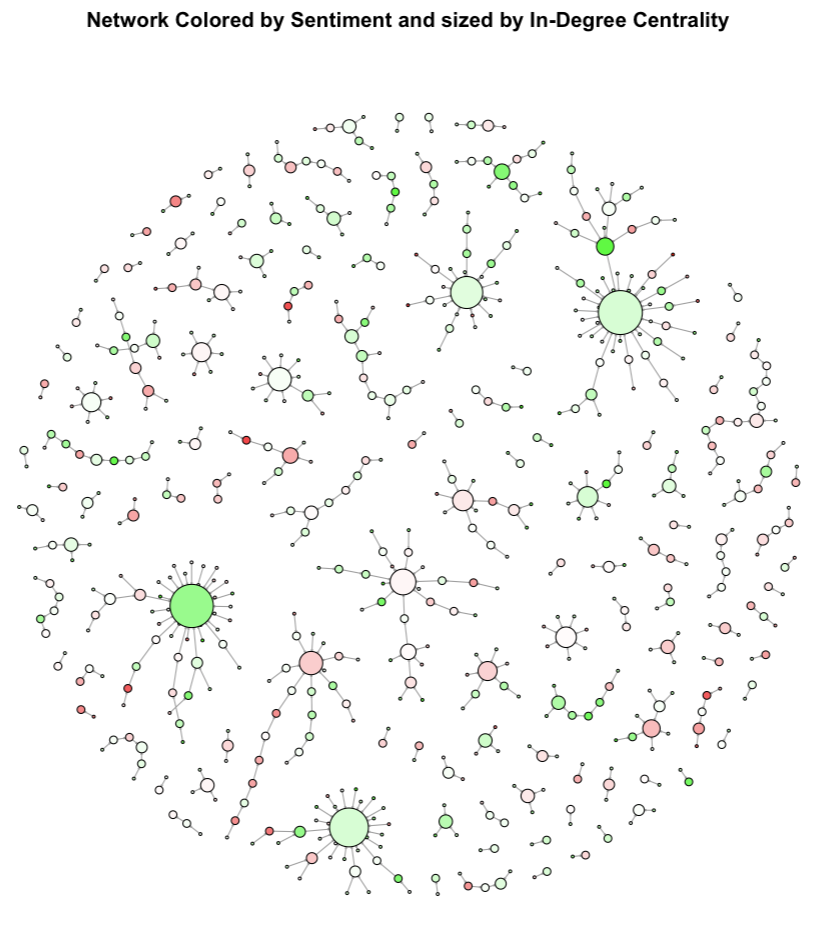
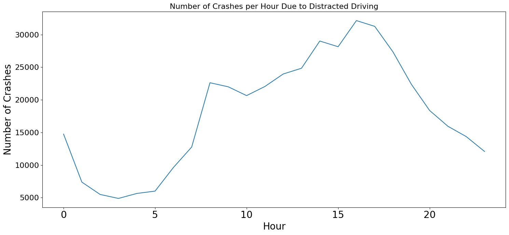
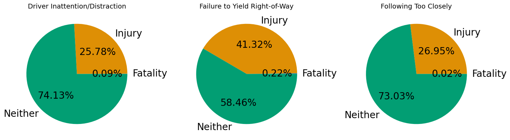
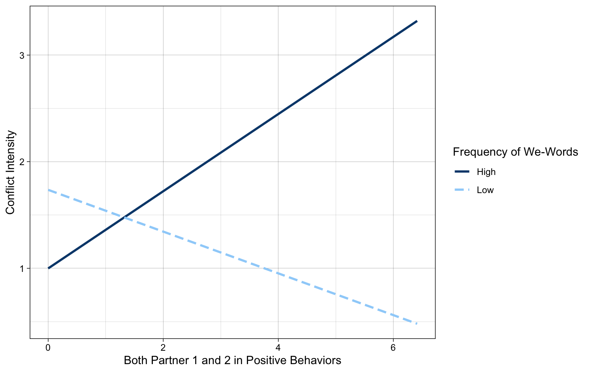
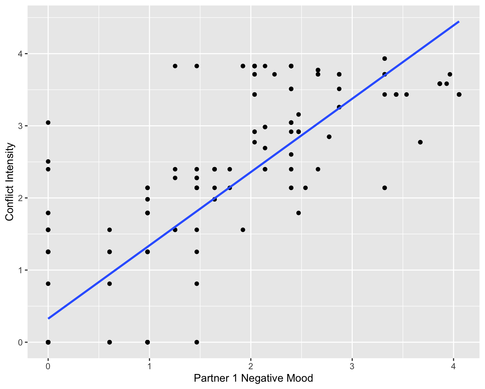

Diabetes Risk Prediction
Built machine learning models to predict diabetes risk using patient clinical data. Combined Logistic Regression (Odds Ratios) for statistical interpretability with Random Forest to boost predictive accuracy.


Reddit Mental Health Sentiment & Network Analysis
An exploratory analysis of Reddit mental health discussions to explore how emotional tone diffuses through threads and how online communities form supportive connections.




NYC Vehicle Crashes Analysis
Explored crash frequency and severity across New York City boroughs using spatial-temporal analysis and descriptive modeling in Python.


Mood and Conflict Intensity in Couples
Applied multiple linear regression models and text mining in R to evaluate how interpersonal mood dynamics impact conflict intensity, moderated by perspective-taking language.

